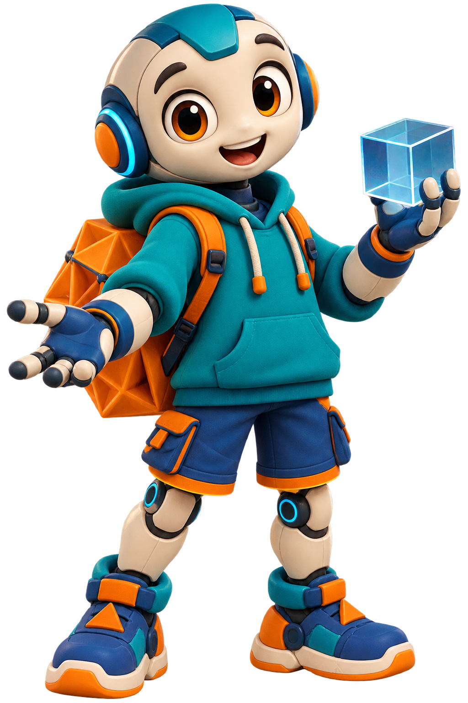

GEOMETRIA EM AÇÃO
6º ano · Aula Flex
Missão especial · Geometria espacial
O mundo está cheio de formas.
Ajude o Geo a explorar sólidos, comparar poliedros e descobrir a Relação de Euler. Aqui você vai girar, montar, separar e testar — aprender mexendo.
Como jogar: toque, arraste, gire o sólido e use as pistas. Em cada missão, complete quatro desafios para receber uma parte do código final.

Roteiro rápido da aula
- Objetivo: reconhecer faces, arestas e vértices e aplicar V + F = A + 2.
- Use uma missão em duplas ou deixe cada grupo escolher um caminho.
- Fechamento sugerido: discutir como a manipulação ajudou a enxergar o sólido.
Missão
Laboratório
0 pontosDesafio 1/4
Aventura
Escolha uma ação para começar.
🏆
Missão concluída!
GEO-000